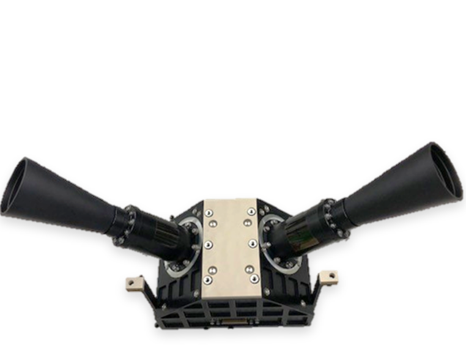
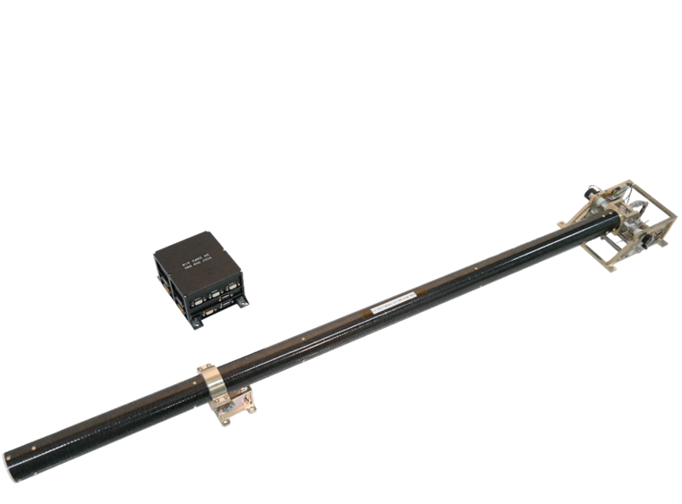
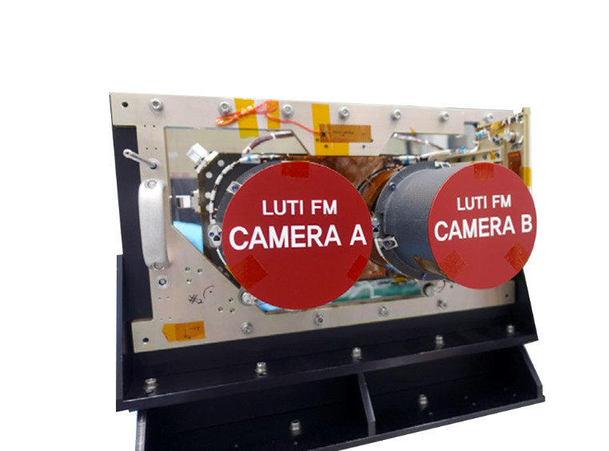
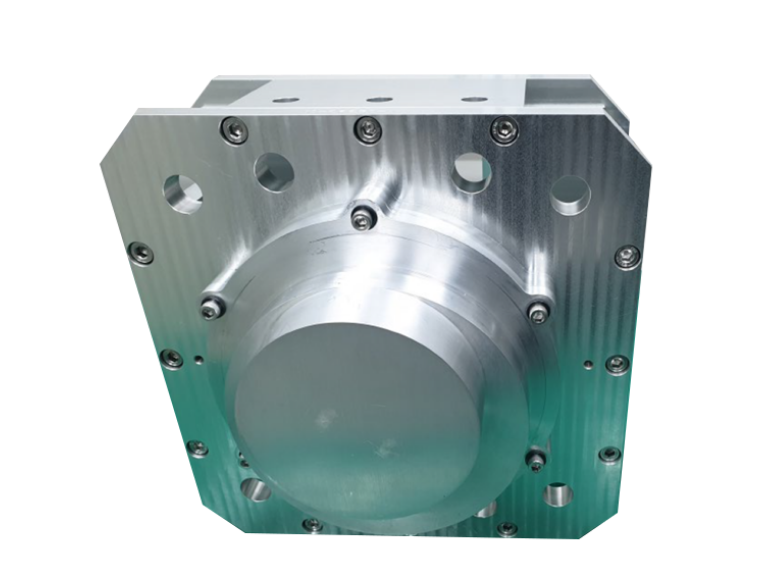
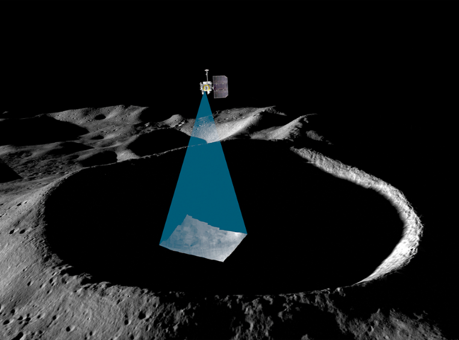

Lunar Observations
Discovery Across
Lunar Observations
DALO(Discovery Across Lunar Observations)는 한국천문연구원의 달 과학연구 및 탐사를 총칭하는 브랜드입니다. 자체 연구 및 국내·외 협력을 통해 달 고유의 특성을 탐구하는 기초과학부터 유인 임무를 포함하는 우주탐사까지 두루 살피며 “달로” 향하는 다양한 프로젝트가 진행됩니다.
Korea Pathfinder
Lunar Orbiter
우리나라 달 궤도선 다누리(KPLO)는 2022년 8월 5일 발사되었습니다. 달 상공 100 ± 30 km 고도의 극궤도를 돌며 약 1년 간 달 탐사에 나섭니다. 다누리의 임무는 달 탐사 및 심우주 통신에 필요한 핵심기술을 개발하고 달 환경을 과학적으로 조사하며, 새로운 우주 기술을 실험하는 것입니다.
PolCam
 Wide-Angle Polarimetric CameraKMAG
 KPLO MAGnetometerLUTI
 Lunar Terrain ImagerKGRS
 KPLO Gamma-Ray SpectrometerShadowCam
Commercial Lunar Payload
Services
한국천문연구원은 NASA의 민간 달 탑재체 서비스(CLPS, Commercial Lunar Payload Services) 계획에 참여할 달 표면 과학탑재체 4종을 국내 대학 및 민간 기업과 함께 개발하고 있습니다. 이는 천문연-NASA 간 탐사과학 실무 그룹을 기반으로 추진되고 있으며, 과학기술정보통신부에서 <한미 민간 달 착륙선 탑재체 공동연구> 사업을 통해 탑재체 개발에서부터 임무 운영, 관측자료 분석의 전 과정을 지원합니다.